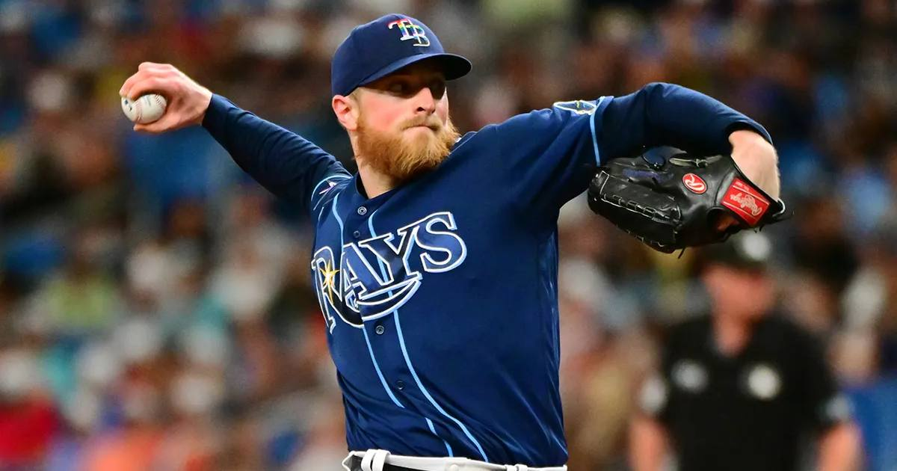

Brewers open as -162 favorites over the Rays in Game 1
Milwaukee opened as -162 favorites for Friday night's World Series Game 1 at American Family Field, with Jacob Misiorowski facing Nick Martinez — while the Rays chase a title that would tie the 1991 Twins as the longest preseason underdog champion ever after opening at 80-to-1.

Disclosure: this post contains affiliate links. I earn a commission on qualifying purchases.
Game 1 is set
World Series Game 1 opens Friday night at American Family Field. The pitching matchup is official: Nick Martinez takes the mound for Tampa Bay against Milwaukee ace Jacob Misiorowski — Kevin Cash confirmed Thursday the Rays are holding ace Drew Rasmussen for Game 2 to give him an extra day of rest after his heavy postseason workload.
The line
Milwaukee opened as -162 favorites over the Rays in Game 1. The books have respected this Brewers club all October, and the home-field edge at American Family Field plus Misiorowski on the mound is enough to make them a clear favorite out of the gate.
The 80-to-1 story
The Rays opened at 80-to-1 in the preseason — a ticket so long it was practically a donation. A Tampa Bay title would tie the 1991 Twins as the longest preseason underdog champion in history.
That's the real story of this Fall Classic. One side is favored on the night; the other is playing for history. If the Rays finish this off, sportsbooks are bracing for huge losses — and the 80-to-1 tickets in drawers everywhere become legendary.
Watch
Source: 2026 World Series Preview: Rays vs Brewers | Predictions & Picks to Win — CBS Sports. David Samson previews the Rays-Brewers matchup with predictions and picks to win the series.
Gear up: Fanatics